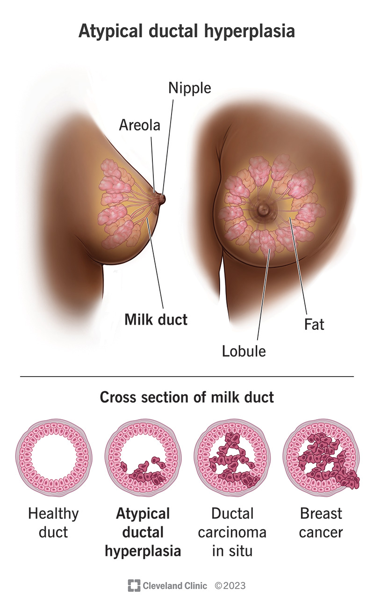

Iperplasia

Aumento del volume di un organo/ tessuto dovuto all’incremento numerico delle cellule parenchimali che lo compongono. Avviene in tessuti in cui le cellule possono proliferare.
- Fisiologia
- A seguito dell’aumento della stimolazione ormonale (proliferazione epitelio ghiandolare della mammella alla pubertà, durante la gravidanza e l’allattamento; utero endometrio e miometrio in gravidanza)
- A seguito dell’aumento della richiesta funzionale-compensatoria (rigenerazione epatica a seguito di epatectomia parziale)
- Patologica
- Ormonale (eccessiva stimolazione ormonale; es. iperplasia benigna dell’endometrio per eccesso assoluto o relativo di estrogeni / iperestrogenismo – lesione precancerosa)
- Riparazione delle ferite da eccessi di fattori di crescita
- Infezione da virus (verruche e lesioni cutanee delle mucose da papillomavirus)
- Iperalimentazione: induce iperplasia delle cellule adipose; l’obesità degli adulti e dei futuri adulti è in progresso; conseguenze patologiche: maggiore frequenza di condizione pre-tumorale, conseguenze metaboliche, predisposizione a ipertensione, insufficienza cardiaca, renale ed eventualmente al diabete mellito (malattia cronica non trasmissibile caratterizzata da elevati livelli di glucosio nel sangue ed è dovuta a un'alterazione della quantità o del meccanismo d'azione dell'insulina)
Ipertrofia

Aumento del volume di un organo/ tessuto dovuto all’aumento delle dimensioni delle cellule
parenchimali che lo compongono. Avviene spesso in tessuti in cui le cellule hanno perso la
capacità di dividersi.
Caratteristiche fondamentali delle ipertrofie sono:
La reversibilità, cioè la capacità di riacquistare le normali dimensioni
dopo la cessazione dello stimolo (questa caratteristica ha grande significato
nella distinzione tra accrescimento non neoplastico e neoplastico, in quanto questo
continua anche dopo la cessazione dello stimolo)
La distrettualità, cioè il coinvolgimento di uno specifico organo e
tessuto e non tutto l’organismo.
Dal punto di vista eziologico le principali cause di ipertrofia sono:
- Aumento della richiesta funzionale: aumento del lavoro di un organo o tessuto
- Aumento della stimolazione ormonale: presente sia in condizioni fisiologiche che patologiche
- Iperalimentazione
- Ipertrofie congenite: presenti alla nascita, inizio nella vita fetale
- Iperplasia rigenerativa: si verifica nel processo di guarigione delle ferite o in caso di perdita di massa cellulare per patologie
Forme fisiologiche
- Ormonale: utero in gravidanza (ipertrofia + iperplasia), mammella durante allattamento
- Compensatoria / aumento della domanda funzionale: muscolo scheletrico nell’atleta (forma pura)
Patologica
- Compensatoria: miocardio stenosi aortica
Atrofia

Diminuzione del volume di un organo o tessuto dovuta alle diminuite dimensioni delle cellule
parenchimali che lo compongono o alla perdita delle stesse per apoptosi. Le cellule atrofiche
hanno funzionalità ridotta ma non sono morte. Quando un organo o un tessuto sono
congenitamente poco sviluppati si parla di ipoplasia.
L’atrofia può essere fisiologica e patologica e determinata da una riduzione della
attività funzionale o alla riduzione della stimolazione ormonale:
- Ridotto utilizzo: muscolo scheletrico (gamba ingessata), osso (osteoporosi) nei pazienti immobilizzati e astronauti
- Perdita di stimolazione endocrina: utero dopo la gravidanza; dopo la menopausa, atrofia dell’endometrio, epitelio vaginale e mammella
- Denervazione: muscolo scheletrico, poliomielite
- Ipoperfusione prolungata: ischemia cronica; cervello nell’adulto
- Iponutrizione: atrofia degli adipociti (insufficienza di calorie proteiche – marasma – assunte porta allo smantellamento della muscolatura)
- Invecchiamento (atrofia senile): cervello, cuore
- Le ipotrofie e le ipoplasie sono condizioni consistenti nella riduzione di volume di un tessuto o di un organo per riduzione di dimensioni e di numero delle cellule parenchimali
- I due fenomeni sono spesso indicati come atrofie